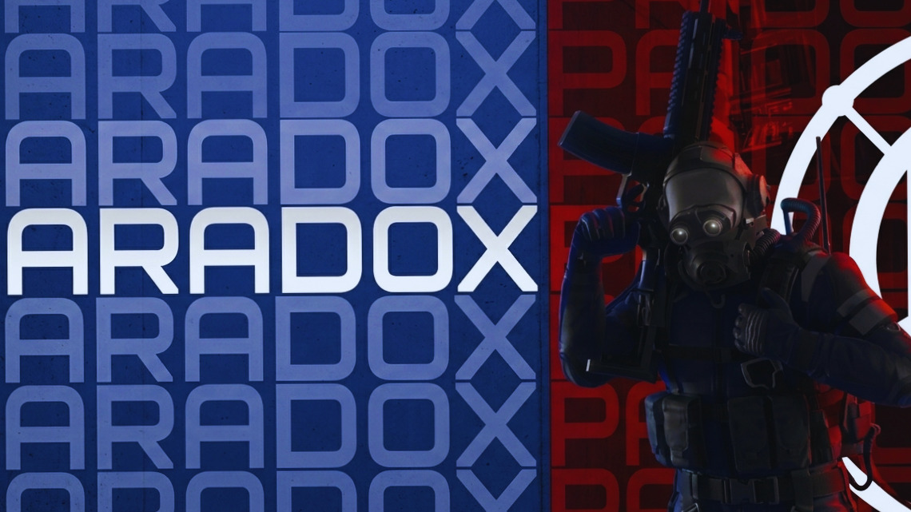
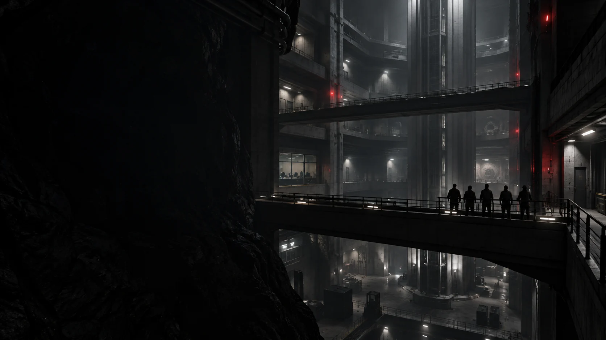

Benvenuti in Paradox.
Una community SCP:SL italiana e internazionale, creata per giocare, condividere e stare bene insieme.
PARADOX PROJECT [BETA]SCP: SECRET LABORATORY
La nostra essenza
Una community,
non un’azienda.
Siamo persone provenienti da diversi angoli del mondo di SCP:SL, unite dalla voglia di divertirci e costruire qualcosa insieme.
Il supporto più importante
Il vostro tempo, la vostra presenza e la vostra pazienza sono già tutto ciò che potremmo chiedere.

Paradox Project
Paradox Project [Beta]
Community nuova, tutta da scoprire. Minigame, media per condividere i tuoi video, vocali e chat in italiano e inglese.
Trasparenza
Una community chiara,
senza sorprese.
Paradox è una community informale: il sito non mostra pubblicità e non usa analytics o cookie di profilazione.
- 01
- Nessun tracciamentoNiente analytics, newsletter o profilazione.
- 02
- Dati minimiIl sito non crea account; per entrare nel server serve un account Discord.
- 03
- Contatto direttoPer domande o richieste usa i ticket del server Discord.
Persone diverse.
La stessa passione.